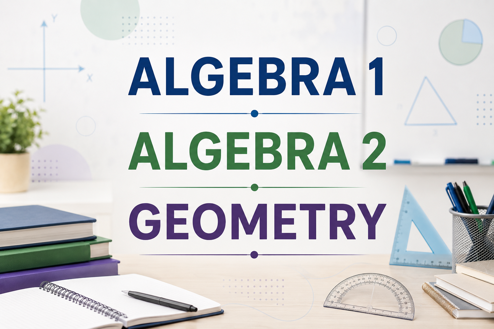

Building a Strong Foundation in High School Mathematics
We provide tutoring for high school students who need academic support with Algebra 1, Geometry or Algebra 2. These courses form an important part of a student's high school mathematics pathway, and students may need additional help when concepts become more advanced or when they fall behind in their coursework.
Our tutoring can be aligned with the curriculum and learning material used by the student's school, with particular attention to commonly used California standards and curricula.

Algebra 1, Geometry and Algebra 2
Algebra 1
Algebra 1 introduces students to the core ideas of algebra and provides the foundation for more advanced mathematics. Students move from working with expressions and equations to analyzing functions and applying algebraic reasoning to real-world problems.
Curriculums we commonly follow:
Common areas:
Linear equations, inequalities, systems of equations, functions, polynomials, exponents, quadratics and data analysis.
Note: We make personalized curriculum for students residing outside California, homeschooled students, and students attending private and charter schools.
Geometry
Geometry focuses on understanding shapes, space and the relationships between geometric figures. Students learn to reason about geometric properties and use mathematical arguments to explain why relationships are true.
Curriculums we commonly follow:
Common areas:
Lines and angles, triangles, congruence, similarity, transformations, circles, coordinate geometry, area, volume and geometric proofs.
Note: We make personalized curriculum for students residing outside California, homeschooled students, and students attending private and charter schools.
Algebra 2
Algebra 2 builds on the concepts introduced in Algebra 1 and introduces students to more advanced functions and algebraic relationships. It prepares students for higher-level mathematics and courses such as precalculus and calculus.
Curriculums we commonly follow:
Common areas:
Polynomial functions, rational expressions, exponential and logarithmic functions, complex numbers, sequences, trigonometry and probability.
Note: We make personalized curriculum for students residing outside California, homeschooled students, and students attending private and charter schools.